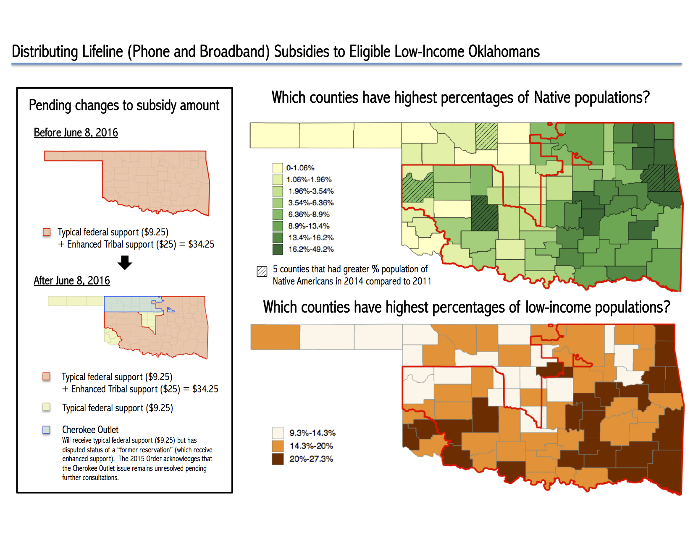

“In 1828, Congress designated the land that would become Oklahoma as Indian Territory. White settlers were required to leave, and a number of tribes from the East and South were forcibly moved into the area from their ancestral lands. [...] At precisely twelve noon on September 16, 1893 a cannon’s boom unleashed the largest land rush America ever saw. Carried by all kinds of transportation - horses, wagons, trains, bicycles or on foot - an estimated 100,000 raced to claim plots of land in an area of land in northern Oklahoma Territory known as the Cherokee Strip. There had been a number of previous land rushes in the Territory - but this was the big one.”– The Oklahoma Land Rush of 1893, Eye Witness to History (2006).
The Background
“Lifeline” is a U.S. federal program started in 1985 to ensure all citizens can access advanced telecommunication services. As of late 2014, Lifeline serves 12.4 million low-income Americans households (defined as income below 135% of the poverty line).
Eligible households across the U.S. receive a $9.25 subsidy per month to offset telephone subscriptions. Those who live on Tribal lands receive an additional $25 (for a total of $34.25) per month. This is called “enhanced Tribal Lifeline support” and aims to speed up broadband adoption in Native Nations.
The Federal Communications Commission (FCC) announced changes in mid-2015 to change the map used to distribute enhanced Tribal support in Oklahoma. How does this impact low-income Oklahomans?
The Data and Tools used
The Shapefiles of how subsidies are distributed in Oklahoma counties are from the FCC.
The county-level data on demographics (percentage of residents who are Native Americans; who live under the poverty line) are obtained from the NTIA's National Broadband Map API with Python and cleaned with R.
The map is created with open-source mapping software QGIS.
The Map
The map is created on March 27, 2016 before the FCC Open Meeting.
Click here for an enlarged version.
{kind=link}
The Story
The map shows proposed changes to the Tribal land designations of Oklahoma per the Second Report and Order released by the FCC in June 2015.
The 2015 Order reduces the number of counties eligible for enhanced Tribal support.Concerns were raised from the Oklahoma Corporation Commission (OCC) and several Tribal entities and industry parties.
In the February 2016, the FCC released the Oklahoma Map Implementation Order. The FCC delayed the proposed Oklahoma Tribal land designations until June 2016 in order to complete the consultation process with Tribal leaders and allow providers time to implement the map and appropriately notify customers.
Finally, the FCC voted on a comprehensive set of policies in March 2016 to substantially modernize the Lifeline program. As part of this vote, the 2016 Further Report and Order retains Tribal lands designation for the Cherokee Outlet in Oklahoma where residents will continue to receive enhanced Tribal Lifeline support.